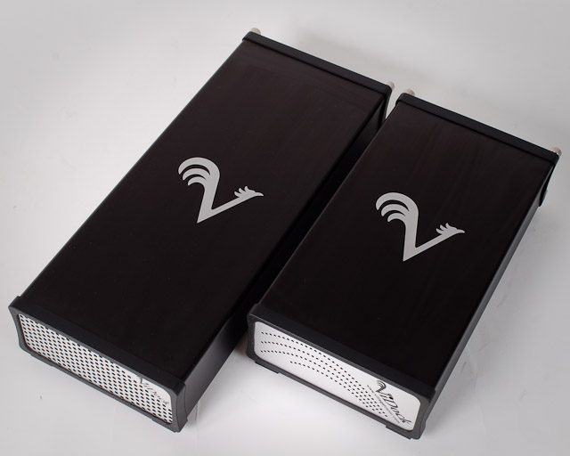
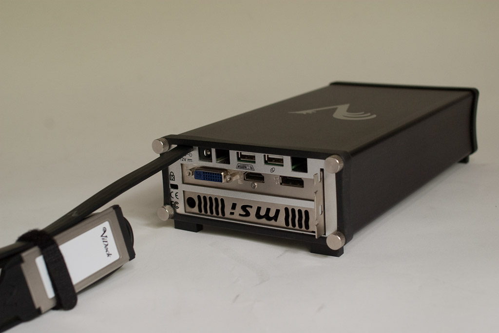
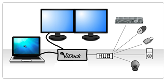

The New ViDock Family: ViDock 3, ViDock 4, and ViDock 4 Plus
 Introducing ViDock 3, ViDock 4, and ViDock 4 Plus
ViDock 3, ViDock 4, and ViDock 4 Plus are expansion chassis tailored specifically for adapting PCI Express graphics cards for use with ExpressCard equipped laptop PCs. Simply select the PCI Express graphics card the best fits your needs and install it in the box. It’s that simple.
Imagine using your thin and light laptop PC during the day on the job, at school, or at the local café then arriving home, or dorm room, plugging it into your ViDock and firing up your latest PC game on a large format monitor. Just plug in one cable into your laptop PC and you instantly have a powerful 3D workstation with a big display, a big keyboard and your pointing device of choice. You are ready for gaming, video transcoding, photoshop, 3D design, watching full 1080p HD movies, and more!
When you need mobility and performance for gaming
PC gamers that need the mobility of a laptop are faced with purchasing a separate gaming desktop for graphics performance and a laptop for small size, light weight, cool temperature, and long battery life. This solution is expensive and keeping the two machines in sync is not always easy. One alternative is to purchase an expensive gaming laptop and deal with lugging around a large and heavy machine, getting burned by the heat, and little battery life. And, when it comes time to upgrade, the only option is to replace the entire laptop.
With a ViDock expansion chassis, you can simply unplug and go to take full advantage of your laptop’s mobile features - light weight, cool, small laptop with great battery life. When you get home, just plug in one cable and your are ready! No sync, no firing up a separate machine, no aches and pains of lugging a heavy computer around all day. And, when it’s time to upgrade, just replace the graphics card with the latest one available - in a few minutes!
Docking for Gamers
With just one cable, your laptop can connect to a large format display (or two), keyboard, and mouse. A USB hub will allow you to add more devices to the one-step plug-in such as a printer, external hard drive, USB headset, and more.
Intelligent Power Management
ViDock 3 manages its own power, so there is no need to fiddle with an on/off button. The embedded microcontroller in ViDock 3 senses the laptop’s power state and keeps the graphics card in sync even while cycling through suspend or sleep modes.